Release Name: SPARROW v4.3 (Eclipse Plugin 2.1)
Release Date: 2012/02/06
Features
# 공통
● 체커 그룹 관리
● 클라이언트 분석 관리 시스템
● GUI 시스템 관리
● 권한 설정 기능
● 체커 개선
● JAVA 분석 지원
● PMD 연동
● 결함리스트 필터 개선
● 결함 밀도 정보
● 한글 지원
● Hudson / Jenkins Plugin
● LDAP 지원
● 사용편의성 강화
● 성능 강화
● 패키지 개선
체커 그룹 관리
- 체커 그룹 설계
아래와 같이 분석할 체커 그룹을 설정하고 프로젝트 생성/수정시에 지정합니다.
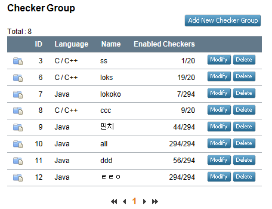
체커 그룹 설계 페이지를 통해 오류 설명을 볼 수 있으며, 분석할 체커를 설정하고 위험도를 변경할수 있습니다.
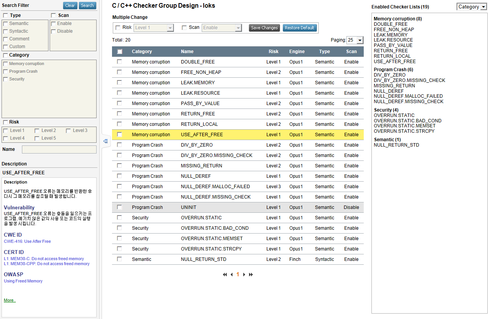
- 프로젝트 생성시 체커 그룹 지정
아래와 같이 프로젝트를 생성/수정시 체커 그룹을 지정하며, 분석시 지정한 그룹이 반영되어 분석을 진행합니다.
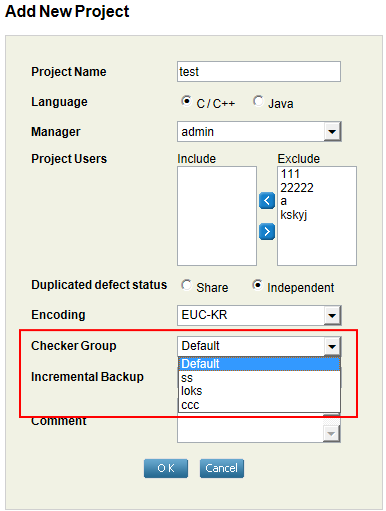
- 클라이언트 분석 옵션에서 체커항목 제거
체커그룹 시스템으로 인해 기존 분석시 사용하던 checker.txt 와 Whislte GUI 에서 지정한 체커 목록 메뉴가 제거되었습니다.
클라이언트 분석 관리 시스템
- 여러개의 프로젝트 통합 분석 관리
기존의 경우 한개의 프로젝트의 설정만 저장하여 사용하였으나, 분석 관리시스템을 통해 NEST에 등록된 모든 프로젝트의 설정을 저장하고 분석 할수 있습니다.
- 설정 마법사를 통하여 프로젝트를 쉽게 생성
기존에 복잡했던 분석 설정을 단순화 하였으며, 설정 마법사를 통해 쉽게 프로젝트를 생성할 수 있습니다.
- 비쥬얼 스튜디오 IDE 지원
비쥬얼 스튜디오 분석시 IDE 에서 별도 설정이 필요 없으며 프로젝트 파일만 지정하여 분석이 가능합니다.
- 멀티 프로젝트 전체분석 가능
여러개의 프로젝트를 선택하고 분석을 수행하면 전체 분석이 가능한 실행파일을 제공합니다.
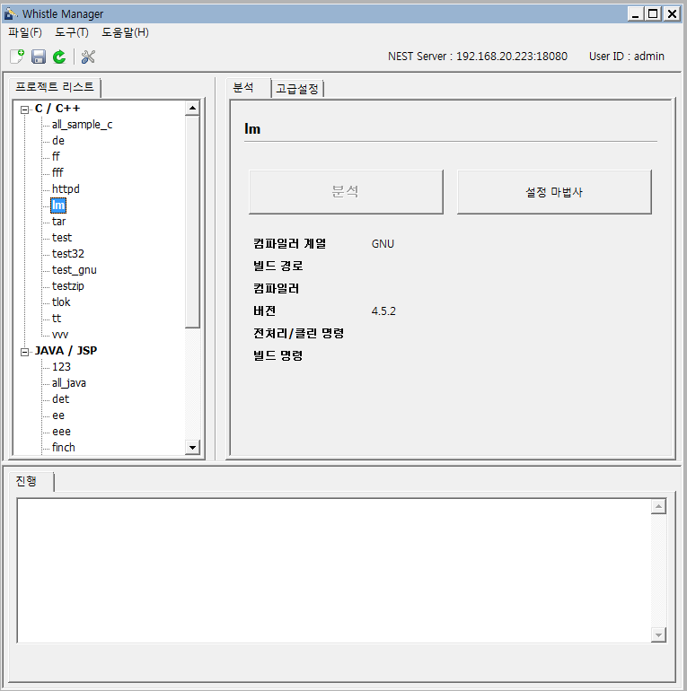
GUI 시스템 관리
GUI 시스템 관리를 통해 SPARROW 서버 시작/중지, 상태 확인을 할 수 있습니다.
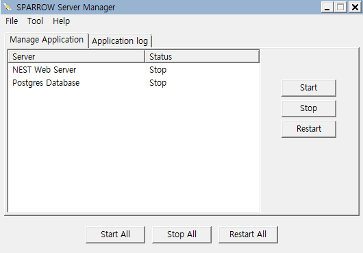
권한 설정 기능
- 프로젝트를 분석, 결과를 공유할 그룹 지정
프로젝트 분석과 결과를 공유할 그룹을 지정합니다. 권한이 없는 사용자는 분석과 결과보기를 수행 할 수 없습니다.
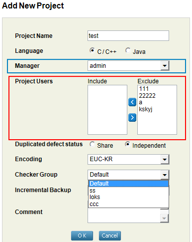
- 권한 있는 프로젝트 검색
커맨드 라인의 경우 [ -U/user 아이디 -PL/projectlist ] 옵션을 사용하여 권한 있는 프로젝트를 검색 합니다.
분석 통합 관리시스템과 이클립스 플러그인은 로그인하면 자동으로 표시 됩니다.
- 분석시 사용자를 입력
커맨드 라인의 경우 [ -U/user 아이디 ] 옵션을 사용하여 권한있는 프로젝트에 분석을 수행 합니다.
분석 통합 관리시스템과 이클립스 플러그인은 로그인하면 자동으로 입력 됩니다.
체커 개선
- 신규 Java 체커 추가
Java 체커에 관해서 20개의 체커가 추가 변경되었습니다. 아래는 현재 지원하고 있는 JAVA 체커 목록 중 신규 추가 변경된 목록입니다.
Checker |
Description |
SQL_INJECTION |
SQL Injection 공격은 클라이언트에서 응용프로그램으로 들어가는 입력데이터를 통하여 SQL Query를 삽입 혹은 “주입”을 함으로써 이루어진다. SQL Injection 에 성공하면, 공격자는 데이터베이스로부터 민감한 데이터를 읽거나, 수정하거나 (삽입/업데이트/ 삭제), 데이터베이스에 관리작업 명령어(i.e. 데이터베이스 종료)를 수행할 수 있고, 데이터베이스상에 존재하는 파일 중에, 운영체제관련 명령어들이 기록되어 있을 수 있는 파일을 얻어올 수 있다. |
DIVDE_BY_ZERO |
프로그램에 예상되지 않는 값이 들어오거나, 적절하게 탐지되지 않은 오류가 발생했을 경우 생긴다. 이 결함은 예를 들어서, 크기, 길이, 너비, 높이 등의 실제 치수를 계산하는 과정에서 종종 발생한다. Divide by Zero 는 프로그램의 비정상적인 종료와 서비스 거부(Denial of Service)를 야기할 수 있다. |
BAD_EQ |
두 개의 object를 “==” 연산자 또는 “equals()” 로 비교할 경우, 잘못된 비교는 프로그램의 오작동을 유발하고, 오류를 진단하기 어렵게 만든다. 대부분의 경우, 자바의 object는 equals method를 사용하여 비교한다. 그러나 효율성을 이유로 간혹 objects를 효율적으로 구성하기 위해서 “equals()” 와 동일한 의미로 사용할 수 있는 “==” 연산자를 사용하여 비교를 하게 된다. 그러므로 Structural 비교를 수행하기 위한 “equals()”, Referential 비교를 수행하기 위한 “==” 이 일관성 없이 사용되는 경우는 프로그램 작성자가 의도하지 않은 것일 수도 있으므로 경고를 내 주는 것이 좋다. |
BAD_OVERRIDE |
method 들이 잘못 overriding 되는 경우 2가지를 선별하여 문제를 보고 한다. 첫 번째 경우는, 어떤 클래스를 상속한 클래스에서 특정 method를 overriding 하는 경우인데, 이 method의 인자의 타입이 부모의 인자타입과 이름은 같지만 패키지 이름이 다를 경우이다. 이 경우는 언뜻 부모클래스의 method를 overriding 하는 것 같지만, 잘 못 overriding 하게 되어서, 원하지 않는 결과가 프로그램의 예상치 않는 종료를 야기할 수 있으므로 미리 탐지하는 것이 좋다. 두 번째 경우는, 어떤 클래스를 상속한 클래스에서 특정 method가 대소문자를 무시하면 이름이 똑 같은 경우이다. 이 경우는 프로그램 작성자가 부모클래스의 method를 Override 하려고 작성한 것이지만, Java 문법에서는 대소문자를 구별하기 때문에, 프로그램이 의도한대로 동작하지 않는 경우가 발생한다. |
CALL_SUPER |
어떤 클래스의 method가 overriding 되었을 경우, 이를 overriding 하는 대부분의 method 들이 부모클래스의 method를 호출한다면, 부모 클래스의 method를 호출하지 않는 경우에는 경고를 낸다. 왜냐하면, 보통 부모클래스에 있는 method들은 기본적으로 수행해야 할 동작들이 method 안에 구현되어 있는데 이를 호출 하지 않는 경우는 프로그램이 잘 못 동작하게 하는 주 원인이 될 수 있다. |
CLASSCAST |
Container 로 여러 특정 type을 갖는 element들을 입력하고 난 뒤, Container에서 다시 꺼내 쓸때는 다른 type으로 downcast 할 경우 경고를 낸다. 이러한 일이 일어나는 코드는 주로 Java Version 1.5 보다 이전 것으로서, Container 로부터 element들을 꺼낼 때 cast가 필요하기 때문이다. 잘못된 type으로 cast를 시도하려고 할 때 응용프로그램은 ClassCastException 에러를 실행도중 발생시키게 된다. |
ITERATOR |
Iterator 및 ListIterator 에서 next() 혹은 previous() 를 호출할 때, 진행할 element가 없을 경우, NoSuchElementException 을 발생시키게 된다. 이럴 경우, 프로그램이 비정상적으로 종료될 수도 있기 때문에 경고를 한다. |
MUTABLE_COMPARISON |
특정 두 instance를 비교하기 위해서(주로 sorting에 사용됨) 흔히 Comparable.compareTo() 메소드를 overriding하여 쓰게 되는데, final이 아닌 field들이나 mutable field들이 읽혀질 경우에는 올바른 비교가 될 수 없기 때문에 경고를 한다. |
MUTABLE_HASHCODE |
보통 특정 클래스의 hash값을 구하기 위해서, Object.hashCode() 를 overriding 하는 것은 기본적인 방법이다. 하지만 hash값을 구하기 위해서 mutable 한 field를 읽어서 hashCode()를 구현하게 되면 문제가 발생한다. hashCode()를 잘못 구현하면 Hash 구조의 특성상, key/value 쌍의 mapping이 맞지 않게 된다. 이로 인해서 생기는 문제들에 대하여 예를 든다면, hash를 이용하여 cache를 구현하게 된다면, 예상한 것보다 많은 cache miss가 생기게 된다. 또한 Hash Table의 key 값을 이용하여 값을 참조하게 된다면 Null Pointer Exception이 발생하여 프로그램이 정상적으로 종료되지 않을 수도 있다. 이 Checker는 Object.hashCode() 를 overriding method가 final 이 아닌 field 값을 읽을 때 경고를 낸다. 추가적으로, 몇몇 상황에서 final 키워드가 사용되지 않았더라도, field가 초기화 된 이후에 한번도 값이 변하지 않았다면 final field로 간주한다. |
PRIVATE_COLLECTION |
특정 클래스 안에 있는 Collection type의 private field들은 private 이 아닌 method들에 의해서 reference가 반환된다면 문제가 생길 소지가 있다. private 이 아닌 method들에 의해서 반환된 reference를 이용하여 private field 의 값이 변경될 수 있기 때문이다. 이는 보안상 치명적인 문제가 될 수 있다. (사용자 정보 유출 가능성) |
SET_STATIC_IN_NON_STATIC |
static field가 static 이 아닌 method에서 값이 변경될 때, 문제가 생길 수 있으므로 경고를 낸다. 보통 static field는 특별한 경우를 제외하고는, static method에서만 access되어야 하지만, 그렇지 않은 경우에는 프로그램이 예상치 않은 결과를 낼 수 있다. |
VIRTUAL_IN_CTOR |
부모 클래스의 Constructor 안에서 virtual function을 호출하게 되면 자식클래스의 field가 초기화되기 전에 읽게 되는 문제를 야기한다. |
FORWARD_NULL |
Reference 변수의 null 확인을 하고나서, 나중에 역참조되는 경우의 코드를 찾아낸다. null reference 를 역참조하는 것은 프로그램 실행 중에 NullPointerException 을 발생 시키고 이는 프로그램 실행을 비 정상적으로 종료 시키는 원인이 된다. 이 에러가 나는 원인은 크게 두 가지가 있는데, 첫 번째는 null 을 확인 하였지만, null을 처리하는 코드가 적절하지 않은 경우이고, 두 번째는 코드의 실행경로 중에 null 확인을 하지 않은 경우이다 |
CLASS_COMMENT |
코드에 선언된 클래스에 대한 주석을 사전에 정의된 클래스 주석 형식에 따라 확인한다. 추가적으로 주석 내에 클래스 이름을 기재하는 형식의 경우 올바른 클래스 이름을 기재했는지 확인한다. |
FIELD_COMMENT |
코드에 선언된 필드에 대한 주석을 사전에 정의된 필드 주석 형식에 따라 확인한다. 추가적으로 주석 내에 필드 이름 및 필드 타입을 기재하는 형식의 경우 올바른 값을 기재하였는지 확인한다. |
GENERAL_COMMENT |
코드에 작성된 일반 주석을 사전에 정의된 일반 주석 형식에 따라 확인한다. |
METHOD_COMMENT |
코드에 선언된 메소드에 대한 주석을 사전에 정의된 메소드 주석 형식에 따라 확인한다. 추가적으로 주석 내에 메소드 이름, 메소드 반환형 및 메소드 파라미터들의 이름, 타입, 그리고 개수를 기재하는 형식의 경우 올바른 값을 기재하였는지 확인한다. |
PACKAGE_COMMENT |
코드에 패키지가 명시되어 있는 경우 패키지에 대한 주석을 사전에 정의된 패키지 주석 형식에 따라 확인한다. 추가적으로 주석 내에 패키지 이름을 기재하는 형식의 경우 올바른 패키지 이름을 기재했는지 확인한다. |
NULL_RETURN |
null 값이 반환되는 경우 null 확인을 하지 않고 역 참조하는 경우에 경고를 낸다. 보통 모든 프로그램에서 null 을 반환할 수 있는 함수들의 결과들은 항상 null 확인을 하고 사용해야 한다. 이렇게 하지 않을 경우, 시스템의 기능을 멈추게 할 수도 있다. |
UNCHECKED_NULL |
null reference 와 비교한 적이 있는 reference 를 이후 비교 없이 사용 할 경우 null dereference 오류가 발생 할 수 있다. 어떤 reference 를 null reference 와 비교 하였다는 것은 해당 reference 가 null 일 가능성이 있다는 것을 뜻한다. 따라서 사용 하기 전에 항상 주의해야 한다. |
- JAVA 체커 세분화
NULL_DEREFERENCE 가 FORWARD_NULL / NULL_RETURN 으로 분리 되었습니다.
- PMD 체커 연동
http://pmd.sourceforge.net/ 의 PMD 4.3 체커 245개를 연동하여 SPARROW를 통해 분석 할수 있습니다.
Java 분석 지원
- 커맨드라인 / GUI 분석 지원
분석과정을 개선하여 전체 분석속도가 크게 향상 되었습니다.
- General / Ant / Makefile / eclipse 빌드환경 지원
General : 빌드된 상태에서 소스경로와 클래스 경로를 지정
Ant : Apache Ant 빌드환경 지원
Makefile : Makefile 빌드환경 지원
Eclipse : Eclipse 프로젝트 빌드 환경 지원
- Hudson / Jenkins 분석 지원
PMD 연동
- PMD 체커 이용 가능
PMD 4.3 245개를 SPARROW 를 통해 자동으로 분석 합니다.
- PMD 검출 결과 관리
PMD 검출 결과를 SPARROW NEST를 통하여 오류 상태 변경, 담당자 지정, 변경관리등의 NEST기능을 전부 사용 할 수 있습니다.
- PMD 오류 한글 설명
PMD 분석 결과를 분석과정을 개선하여 전체 분석속도가 크게 향상 되었습니다.
- Hudson / Jenkins 연동
Hudson / Jenkins 에서도 PMD결과를 볼 수 있습니다.
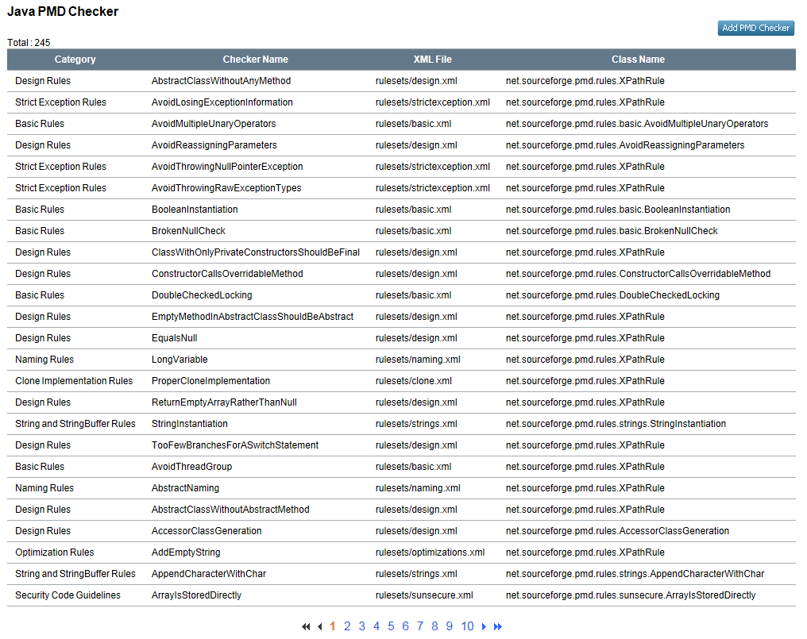
결함 리스트 필터 개선
- 체커 필터에 카테고리 추가
카테고리와 리스크를 제공하여 트리 형식으로 체커 필터를 사용할 수 있습니다. (초록 사인 참조)
- 카테고리 / 리스크별로 정렬 가능
카테고리와 리스크를 선택하여 정렬이 가능합니다. (파랑 사인 참조)
- 비활성화된 체커 목록 숨김 기능
분석시 비활성한 체커는 목록에서 숨길수 있습니다. (빨강 사인 참조)
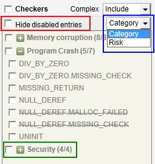
결함 밀도 정보
전체, 개별 소스코드의 결함밀도(Defect Density) 정보를 추가하였습니다.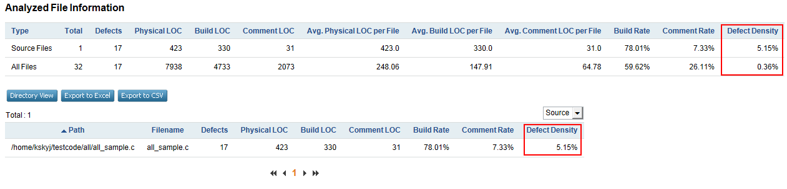
한글 지원
- 클라이언트 분석 관리 시스템 한글화
- 이클립스 플러그인 한글화
- 에러 메시지 한글 지원
HUDSON / JENKINS Plugin
- 빌드 후 자동으로 SPARROW 분석 수행
CI Tool인 HUDSON(JENKINS)지원으로 빌드 후 자동으로 SPARROW 분석을 수행하고 결과를 HUDSON(JENKINS)에서 확인 가능합니다..
- 스케줄러를 통하여 원하는 시간 / 주기로 SPARROW 분석 수행가능
스케줄러를 통해 원하는 시간 / 주기로 자동으로 SPARROW 분석을 수행 할 수 있습니다.
- HUDSON / JENKINS 와 NEST 연동
HUDSON(JENKINS) 에 분석 결과에 NEST 링크가 표시되며, NEST를 통해 보다 상세하게 오류를 확인 할수 있습니다.
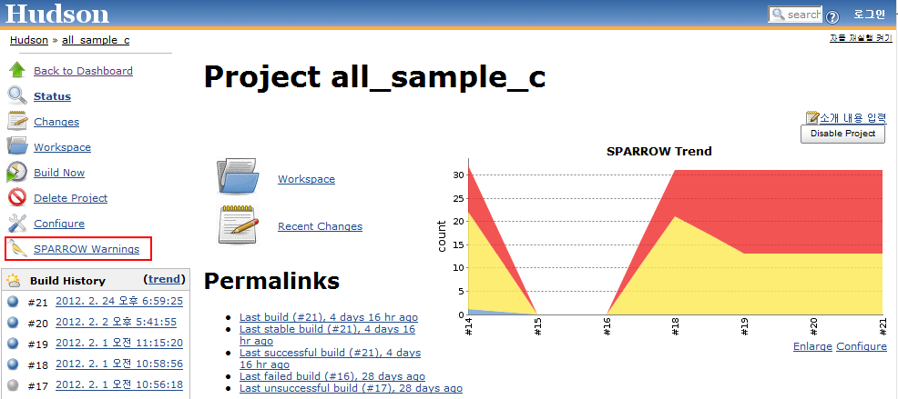
LDAP 지원
LDAP(Lightweight Directory Access Protocol)을 지원 함으로서, LDAP 데이터로 NEST를 이용 할 수 있습니다.
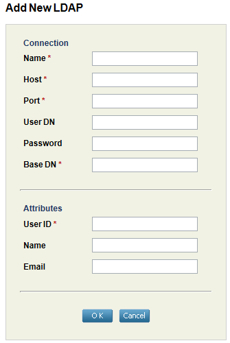
사용 편의성 강화
- 오류 상태 수정시 자동 저장
분석 보고서에서 오류의 상태(Classfication / Action / Priority / Owner ) 변경시 저장버튼을 누르지 않아도 저장됩니다.
- 프로젝트 검색 강화
프로젝트 페이지에서 기존 프로젝트 이름 검색만 지원하였으나, Manager , Comment 검색 항목이 추가되었습니다.
- xml-update 분석 옵션 추가
분석 후 NEST에 결과를 업로드 하는 과정에서 실패하였을 경우 -E xml-update 옵션을 통해서 결과만 업로드 할 수 있습니다.
- zip 옵션 추가
prep , extract , analysis 옵션 사용시 [ -zip 파일명 / -Z 파일명 ]옵션을 사용하여 작업 수행후 입력한 파일명대로 압축을 합니다. 압축된 파일을 지정하여
분석을 수행 할 수 있습니다.
- 프로젝트별 로그 생성
SPARROW_ROOT/logs/whistle 폴더에 프로젝트 별로 분석 로그가 저장됩니다.
- 로그 백업 기능
SPARROW_ROOT/logs/whistle 폴더에 프로젝트 별로 분석 로그가 2개씩 저장 됩니다.
- 정렬그룹에 카테고리 추가(Eclipse Plugin)
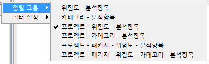
- 기존 결과 삭제 옵션 추가(Eclipse Plugin)
기존 결과 삭제 옵션을 설정하면 결과 누적을 하지 않고, 기존결과를 삭제하고 분석 합니다.
- JSP 분석 옵션(Eclipse Plugin)
JSP 분석 옵션을 설정하여 JSP를 분석 할 수 있습니다.
- 자동 로그인 지원(Eclipse Plugin)
기존 결과 삭제 옵션을 설정하면 결과 누적을 하지 않고, 기존결과를 삭제하고 분석 합니다.
- NEST 연동 메뉴 개선(Eclipse Plugin)
NEST 연동 메뉴를 따로 표시하게 변경하였습니다.
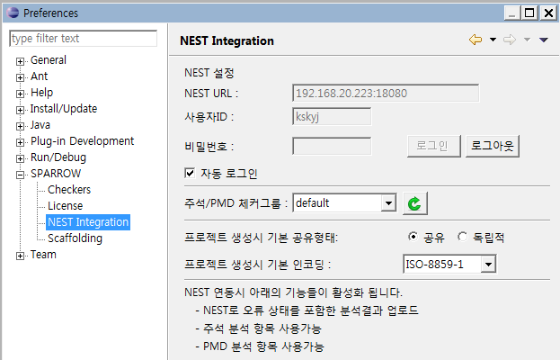
- 자동분석 옵션 제거(Eclipse Plugin)
성능 강화
- 분석과정 속도 개선
분석과정을 개선하여 전체 분석속도가 크게 향상 되었습니다.
- 파싱에러 처리 개선
파싱 처리를 매크로와 루틴을 수정하여 에러율을 감소하였습니다.
- Eclipse plugin 결과 삭제 개선
Eclipse plugin 분석 결과 삭제 성능을 향상 되었습니다.
패키지 개선
- 자바 포함
Jre6 를 포함하여 따로 자바를 설치할 필요가 없습니다.
- 이클립스 플러그인 32bit/64bit 모듈 통합
32bit / 64bit 모듈 통합으로 architecture 구별이 필요 없습니다.
Created with the Personal Edition of HelpNDoc: Full featured Documentation generator